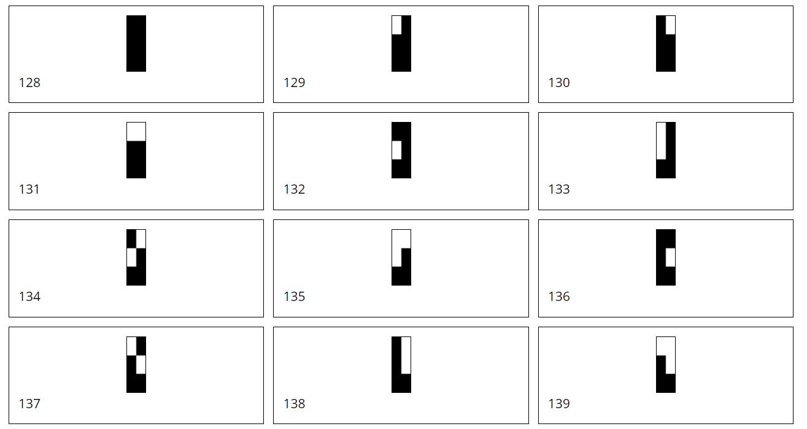
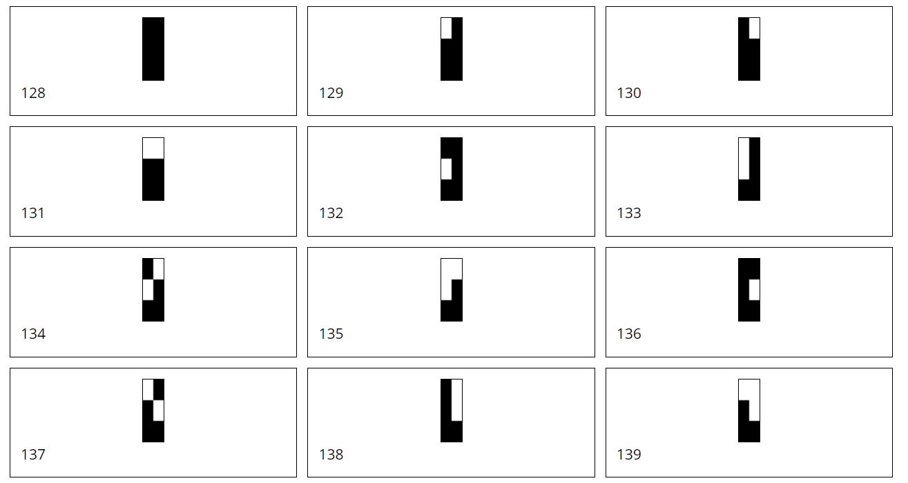
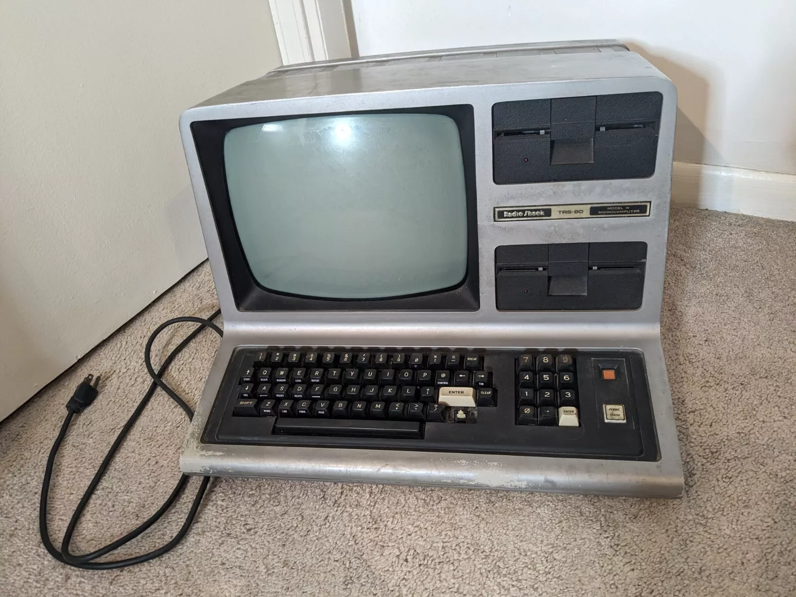
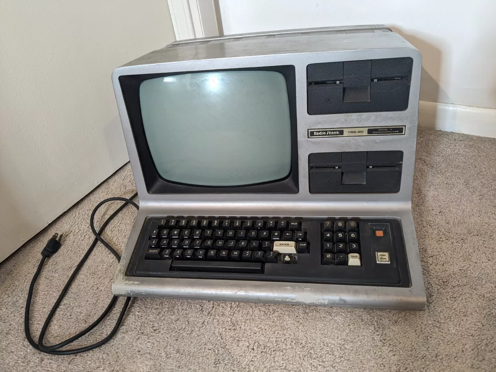

THE GAMES I
USED TO PLAY
Watch the videos.USED TO PLAY
Play the games.
Greetings you absolute weirdo. My name is Jim McGinley (jim@bigpants.ca) and I played these games 42 years ago. Click a game, watch the video, then click a level to play right now! A TRS-80 Model III emulated in your browser? Truly it's 2024! Unless you're on mobile, in which case you can only read this text and watch the video. Most games start boring so I recommend the higher levels. I love these games, and now you'll love them - all 16 kilobytes.
You can reload your game (Ctrl+L) and save (Ctrl+S) - 3 slots per game. You can copy a game (Ctrl+C), paste it into an e-mail (Ctrl+V) and send it to a friend. They can paste it into this site and continue your game! Should you reach higher levels or find interesting moments e-mail them to me (jim@bigpants.ca) for main menu consideration.
The Hard Sell
Consider buying Endlight, our chaotic action game with a TRS-80 heart. Boom.
NEWS
| July 17, 2024 | Added Empire |
| July 15, 2024 | Added Dancing Demon |
| July 14, 2024 | Can paste outside text into emulator |
| July 13, 2024 | Added buttons for Save, Load and 5X speed |
| July 12, 2024 | Fixed Emulator Shift Key issue |
| July 10, 2024 | Added Resolution and History. Added feedback for Save & Load keyboard actions. |
| July 7, 2024 | Added Challenges |
| July 6, 2024 | Added Penetrator |
| July 2, 2024 | Added Scarfman |
| July 1, 2024 | Added Outhouse, Defense Command, Crazy Painter |
| July 1, 2024 | Released website v1.0 |
ABOUT
"The Games I Used to Play" showcases the games I used to play on my TRS-80 42 years ago.
Every week I'll be releasing a TRS-80 game and an accompanying video for those of you with no time to play.
Despite the gap, I can play these games better than ever.
This site is only possible thanks to
What do I bring to the table?
My looks.
This site is only possible thanks to
- The original trs80gp - A TRS-80 Model 1,2,3,4,12,16,6000,MC-10,Color Computer,DT-1,Videotex Emulator created by George Phillips
- The TRS-80 Model III Emulator in Javascript created by Peter Phillips (ported the above)
- The genius game developers who had nothing to work with (many have officially released their games to the public domain)
- Welcome To Ira Goldklang's TRS-80 Revived Site
Software Search is incredible. Beyond in game credits, this is the best way to clarify names and dates. Ira has public domain TRS-80 ROMS, and images of the game covers
- The Big List of TRS-80 Software
Play everything in your browser. Instrumental in determining the best version of the games
- Internet Archive
TRS-80 game manuals. Searchable 80-Micro magazines including game reviews and tips.
- Moby Games
TRS-80 game covers and screenshots. Lists of games by people and by company.
- Video Game Geek
TRS-80 game covers and screenshots.
What do I bring to the table?
My looks.
CONTROLS
Esc
Trs-80 Break
\
Trs-80 Clear
Ctrl+P
Pause
the washroom calls
Ctrl+S
Save
save permanently, you have 3 slots per game
Ctrl+L
Load
load latest save
Ctrl+C
Copy
copy game to memory
Ctrl+V
Paste
restore copy, preserve in text document,
e-mail to friend, share on website
e-mail to friend, share on website
RESOLUTION
128 x 48
But it's not that simple.
It's actually 512 x 192 (unmatched for a decade).
But it's not that simple.
The display is actually a 64x16 grid of 8x12 ASCII characters. So the resolution is 512 x 192 but you can't change pixels, only ASCII characters. There are 256 ASCII characters to choose from including letters, numbers, symbols, emoticons(!) and squots. To provide line spacing between the 16 rows of text, most characters use only 8 of the 12 vertical pixels. Presenting... all of them.

These high resolution characters could only be displayed by the proprietary monitor. The result was small, detailed text - something not possible on the Atari 2600, NES or even the mighty Commodore 64. Dense text adventures found heaven on the TRS-80, and hell on consoles (the lack of keyboard also didn't help).
The entire screen only takes 1Kb of our precious 16Kb: 64 x 16 x 1 byte (256 character possibilities) = 1,024 bytes. For comparison, a typical 1080p display takes 8,100Kb: 1920 x 1080 x 4 bytes (32-bit colour) = 8,294,400 bytes. That's 507 TRS-80s.
The 128 x 48 Trick
While it's possible to make a game using 64 x 16 characters, movement would be very choppy. i.e. Moving player right would skip 8 pixels at a time. i.e. Moving player up would skip 12 pixels at a time. Additionally, 64 x 16 provides few places to move.
To solve this, 64 of those ASCII characters represent pixels - a genius idea that confused so many for so long (aka. me until now). Characters 128 to 191 are every variation a 2x3 grid of squares can be: from full to empty (each square is 4 x 4 pixels). So moving a TRS-80 pixel down 6 times means changing the ASCII character at a 64x16 position 3 times, then changing the ASCII character below that 3 times. Games use this trick all the time resulting in smoother movement (4px), more places to move, and the 128 x 48 resolution myth. In the immortal words of John Candy: "Those aren't pixels!"
The drawback? The 2x3 squares are large (4x4 pixels), and calculating the correct 2x3 ASCII character for the 64x16 position consumes scarce CPU. There wasn't enough memory to handle a 8x12 pixel grid, so this was a brilliant albeit blocky compromise. Bonus: Now you understand why a TRS-80 "pixel" can't overlap a letter. A TRS-80 pixel is a letter.

The Final Result
For action, games use 4x4 blocky pixels that can be positioned at 128x48. For lettering and HUD components, games use 8x12 high-rez characters that can only be positioned at 64x16. The best games mixed these for maximum screen usage. i.e. The Dancing Demon blocky pixel curtain was decorated with high-rez letters. Combined with the "tall" pixels and screen lines (the emulator captures these perfectly), the TRS-80 has a never-imitated, never-duplicated look.
Can you upgrade the TRS-80 graphics card?
Yes
But it's not that simple.
It's actually 512 x 192 (unmatched for a decade).
But it's not that simple.
The display is actually a 64x16 grid of 8x12 ASCII characters. So the resolution is 512 x 192 but you can't change pixels, only ASCII characters. There are 256 ASCII characters to choose from including letters, numbers, symbols, emoticons(!) and squots. To provide line spacing between the 16 rows of text, most characters use only 8 of the 12 vertical pixels. Presenting... all of them.
These high resolution characters could only be displayed by the proprietary monitor. The result was small, detailed text - something not possible on the Atari 2600, NES or even the mighty Commodore 64. Dense text adventures found heaven on the TRS-80, and hell on consoles (the lack of keyboard also didn't help).
The entire screen only takes 1Kb of our precious 16Kb: 64 x 16 x 1 byte (256 character possibilities) = 1,024 bytes. For comparison, a typical 1080p display takes 8,100Kb: 1920 x 1080 x 4 bytes (32-bit colour) = 8,294,400 bytes. That's 507 TRS-80s.
The 128 x 48 Trick
While it's possible to make a game using 64 x 16 characters, movement would be very choppy. i.e. Moving player right would skip 8 pixels at a time. i.e. Moving player up would skip 12 pixels at a time. Additionally, 64 x 16 provides few places to move.
To solve this, 64 of those ASCII characters represent pixels - a genius idea that confused so many for so long (aka. me until now). Characters 128 to 191 are every variation a 2x3 grid of squares can be: from full to empty (each square is 4 x 4 pixels). So moving a TRS-80 pixel down 6 times means changing the ASCII character at a 64x16 position 3 times, then changing the ASCII character below that 3 times. Games use this trick all the time resulting in smoother movement (4px), more places to move, and the 128 x 48 resolution myth. In the immortal words of John Candy: "Those aren't pixels!"
The drawback? The 2x3 squares are large (4x4 pixels), and calculating the correct 2x3 ASCII character for the 64x16 position consumes scarce CPU. There wasn't enough memory to handle a 8x12 pixel grid, so this was a brilliant albeit blocky compromise. Bonus: Now you understand why a TRS-80 "pixel" can't overlap a letter. A TRS-80 pixel is a letter.

The Final Result
For action, games use 4x4 blocky pixels that can be positioned at 128x48. For lettering and HUD components, games use 8x12 high-rez characters that can only be positioned at 64x16. The best games mixed these for maximum screen usage. i.e. The Dancing Demon blocky pixel curtain was decorated with high-rez letters. Combined with the "tall" pixels and screen lines (the emulator captures these perfectly), the TRS-80 has a never-imitated, never-duplicated look.
Can you upgrade the TRS-80 graphics card?
Yes
HISTORY
The Tandy Radio Shack Z-80 (TRS-80) Model I was released by Radio Shack in August 3, 1977.
One of the first computers people could buy for their home from the local mall.
Hugely successful (greatly outselling Apple until 1982), yet mostly forgotten.
Technical Specifications
. Monitor: 12" 15kHz 384x192 monochrome monitor, black & white (no grays)
. Processor: Zilog Z-80 1.77 MHz
. Memory: 4Kb
. Upper case only (saved $1.97 per computer)
. Caused radio interference, angering the FCC
In 1979 the radically different business focussed TRS-80 Model II was released. It was not compatible whatsoever, and I know little about this bastard child.
In 1980 Radio Shack released the TRS-80 Model III, an improved version of the Model I with a better processor (2.03Mhz), better resolution (512 x 192), more memory (16Kb), lower case, and no radio interference. Like upgrading from PS4 to PS4 Pro. My Dad bought this when I was in Grade 6 because he knew the revolution had come, and he's a genius. Games played best on the TRS-80 Model III, so that's what we're emulating.

Found this image on eBay in 2024. Note the position of the arrow keys, and coating eroded by years of sweaty palms. You can buy an official image for $575
Technical Specifications
. Monitor: 12" 15kHz 384x192 monochrome monitor, black & white (no grays)
. Processor: Zilog Z-80 1.77 MHz
. Memory: 4Kb
. Upper case only (saved $1.97 per computer)
. Caused radio interference, angering the FCC
In 1979 the radically different business focussed TRS-80 Model II was released. It was not compatible whatsoever, and I know little about this bastard child.
In 1980 Radio Shack released the TRS-80 Model III, an improved version of the Model I with a better processor (2.03Mhz), better resolution (512 x 192), more memory (16Kb), lower case, and no radio interference. Like upgrading from PS4 to PS4 Pro. My Dad bought this when I was in Grade 6 because he knew the revolution had come, and he's a genius. Games played best on the TRS-80 Model III, so that's what we're emulating.

Found this image on eBay in 2024. Note the position of the arrow keys, and coating eroded by years of sweaty palms. You can buy an official image for $575
CHALLENGES
- A Walk In The Park
shoot the flagship just before it reaches the middle, brace yourself
- Fast Food
clear Skill Level 9 without dying, requires planning
- Strangelove
drop one perfectly timed bomb, enjoy the spectacular fireworks
- Silence of the Lambs
Send 92 soldiers to attack Bavaria, then live with yourself
- Patience
Read all Empire instructions on very slow
- Walk On
Walk onto the lifts without jumping. It's fun!
- One Must Fall
Jump over a fireball while it crosses a segment
- Schizm
Jump over a fireball while it crosses a segment (difficult)
- Donovan Bailey
Outrun the falling barrel